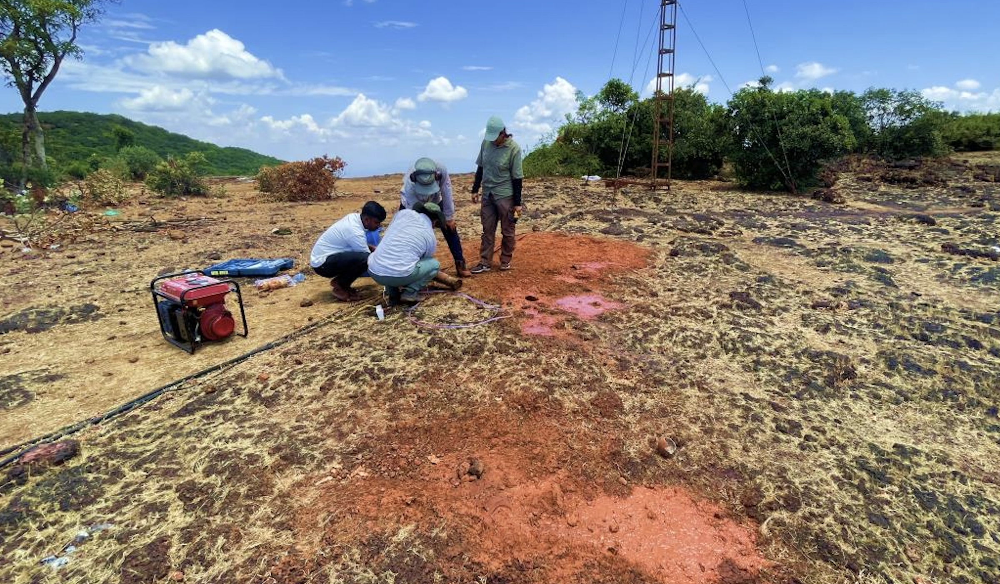
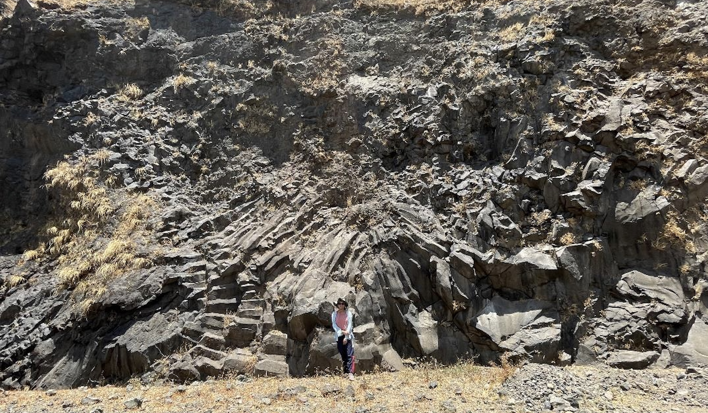
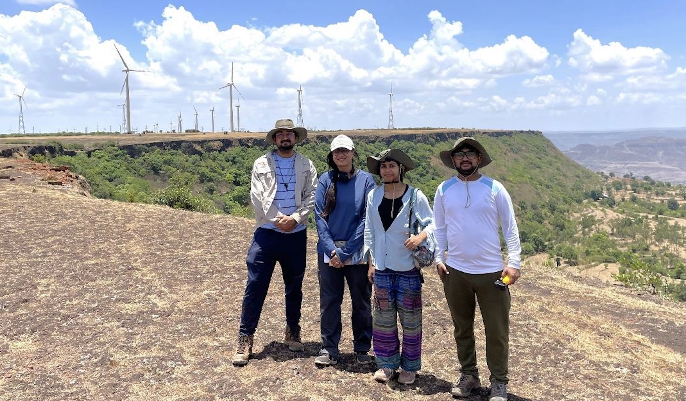
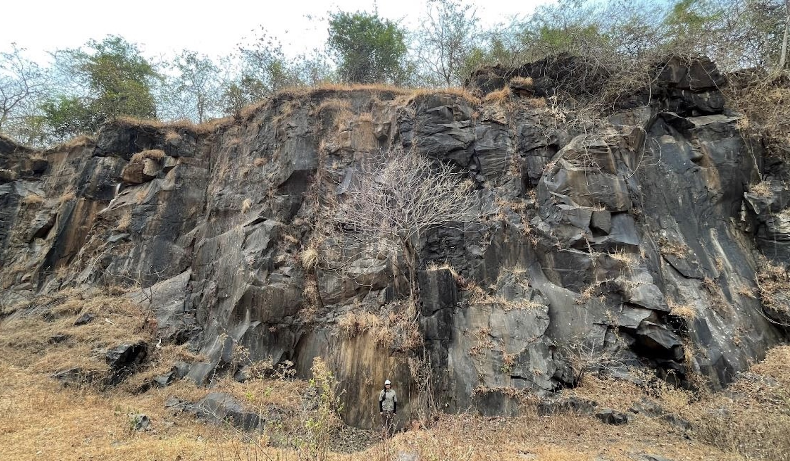
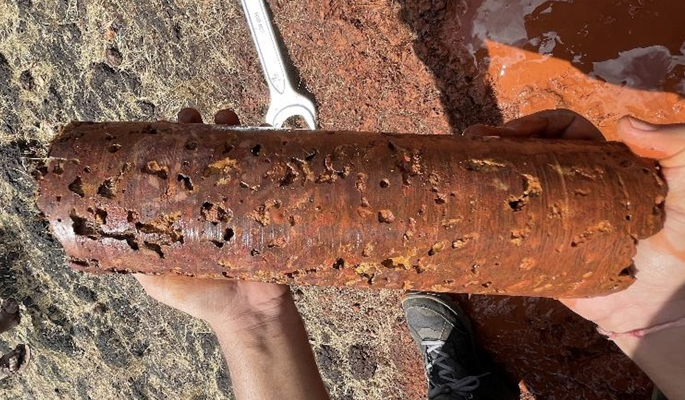
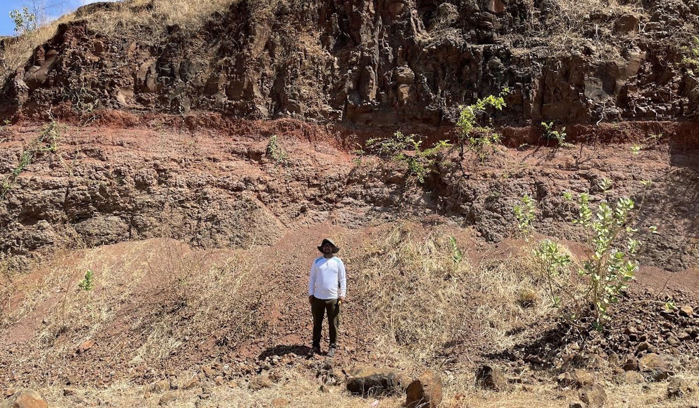
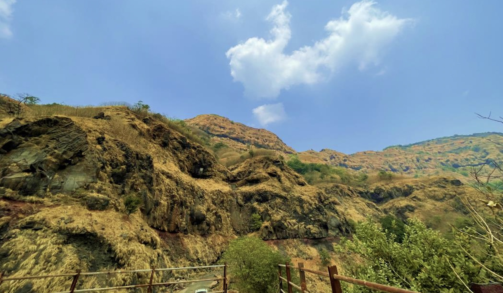
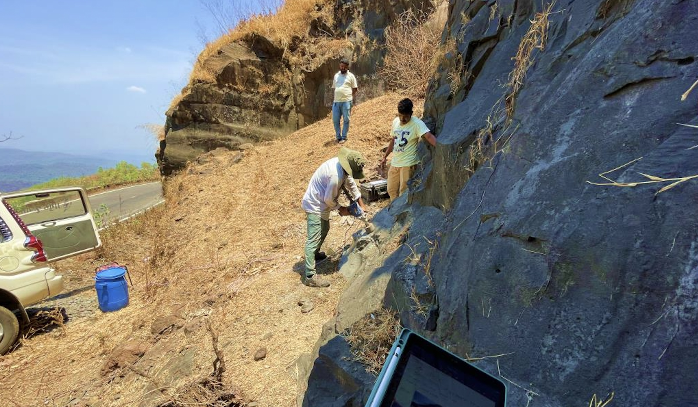
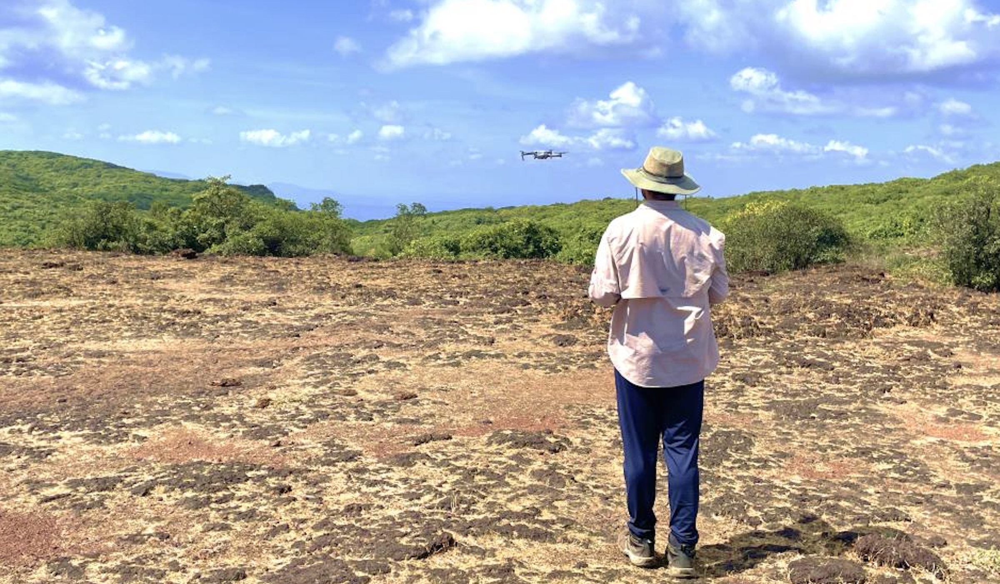

Glimpses of onsite drilling to collect core data.

Massive basalt with radial columnar joints at Junglee jaygarh fort road.

The field team of REEFS Lab, IIT Gandhinagar

Massive basalt at Nehru Garden.

Cores of various basalt facies from different regions were acquired (Note: the presence of amygdules).

Distinguished red bole bed near Patan.

A glimpse of Sahyadri range at Junglee Jaygarh fort road.

Glimpses of onsite drilling to collect core data.

Flying the drone to collect images of basalt flows.
The Sahyadri mountain range (also known as the Western Ghats), synonymous with awe- inspiring beauty, shelters within its heart a geological treasure: the Deccan basalt. The Deccan trap is 67.3-68.1Ma old and one of the largest volcanic provinces in the world. Our journey was driven by the curiosity to understand whether this unique volcanic rock could play a pivotal role in absorbing and storing carbon dioxide from the atmosphere, thus contributing to mitigating global warming.